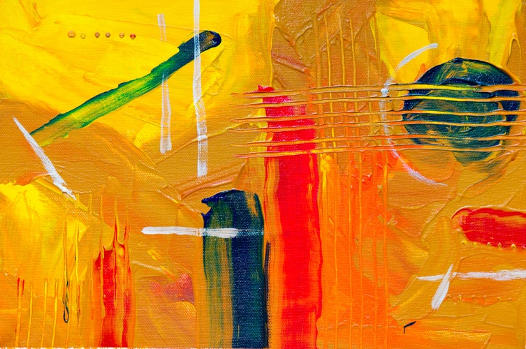

Témy tohoto blogu:
-

Udržateľný životný štýl:
Téma, ktorá bude stále viac a viac aktuálna v roku 2024, vzhľadom na súčasnú klimatickú krízu. Blog by mohol ponúkať tipy na ekologické životné štýly, recenzie značiek a produktov s minimálnym dopadom
-

Mentálne zdravie:
Stále viac ľudí si uvedomuje dôležitosť starostlivosti o svoje mentálne zdravie. Blog by mohol poskytovať príbehové články, rady o sebanájde, meditáciu, jogy a iné techniky relaxácie a zníženia stresu.
- 
Digitálny marketing:
Vzhľadom na to, že digitálny svet sa rýchlo rozvíja, odborníci na digitálny marketing sú v roku 2024 cenní. Blog by mohol poskytovať návody, príklady a trendy v oblasti online reklamy, sociálnych médií, SEO a iných relevantných
-

Career development:
People are always interested in their career development, and that also applies to the year 2024. The blog could offer tips on job search, skill development, work trends, and advice from professionals in various industries.
-

Equality and inclusion:
Topics related to equality and inclusion will be increasingly important in 2024. The blog could address various aspects of this topic, including gender equality, minority representation, inclusive education, and so on.
-

Tech novinky:
Technológia sa stále rýchlo mení a novinky v tejto oblasti budú určite zaujímavé pre čitateľov v roku 2024. Blog by mohol sledovať najnovšie trendy a technologické novinky, ponúkať recenzie a návody na nové zariadenia
-
Cestovanie a objavovanie:
Svet sa stále viac otvára cestovaniu a objavovaniu nových miest a kultúr. Blog by mohol ponúkať príbehy a tipy cestovateľov, informácie o turistických atrakciách, najlepších miestach na cestovanie a podobne.
-

Wellness a zdravý životný štýl:
Záujem o wellness a zdravý životný štýl neustále rastie. Blog by mohol poskytovať rady o zdravej výžive, cvičení, starostlivosti o telo a mysle, recenzie wellness centier a produktov.
-

Finančné tipy a investovanie:
Finančná gramotnosť je dôležitá pre každého, a preto téma finančných tipov a investovania bude v roku 2024 aj naďalej relevantná. Blog by mohol poskytovať rady o sporeniu, investovaní, plánovaní peňazí a informácie
-

Zábava a popkultúra:
Ľudia stále majú záujem o zábavu a popkultúru. Blog by mohol recenzovať filmy, knihy, hudbu, športové podujatia a iné trendy v oblasti zábavy a popkultúry.
Autori obsahu pre zabezpečenie kvalitných výsledkov svojej práce používajú rôzne nástroje na písanie obsahu.
Témy ktoré ponúkajú obsah sú pre rok 2024 aktuálne, relevantné a zaujmú čitateľov. Odpovedajú na otázky pre bežný život, to čo ľudí zaujíma. Nie sú abstraktné, či odtrhnuté od života. Dokážu rezonovať aj u širšieho publika, neobmedzujú sa na úzku skupinu užívateľov.